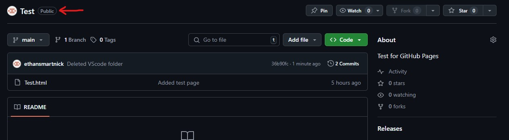
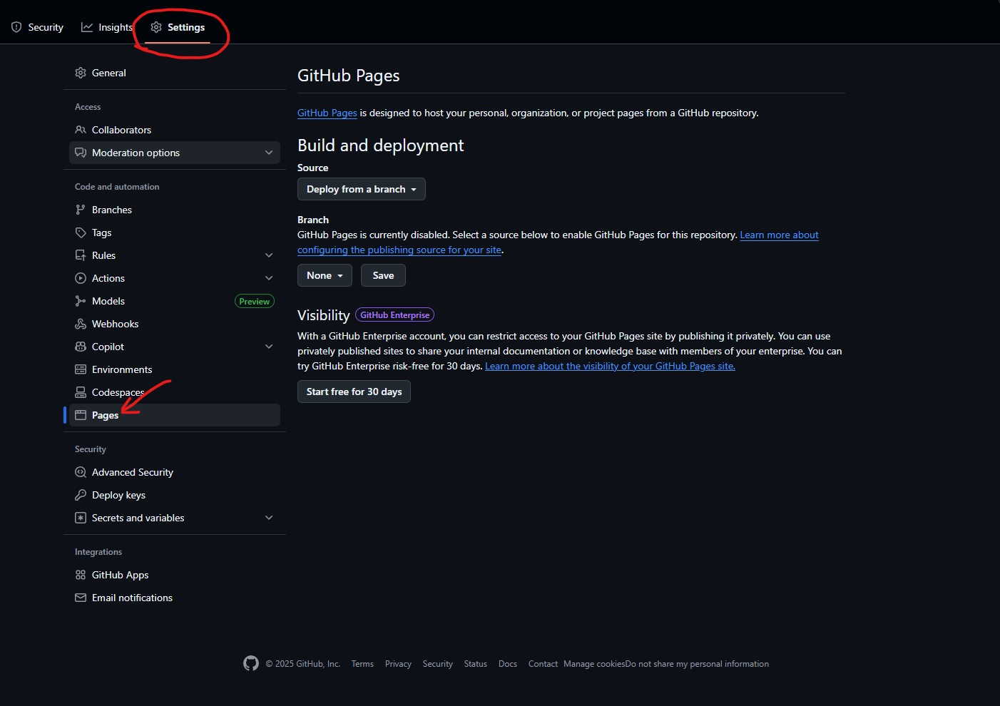
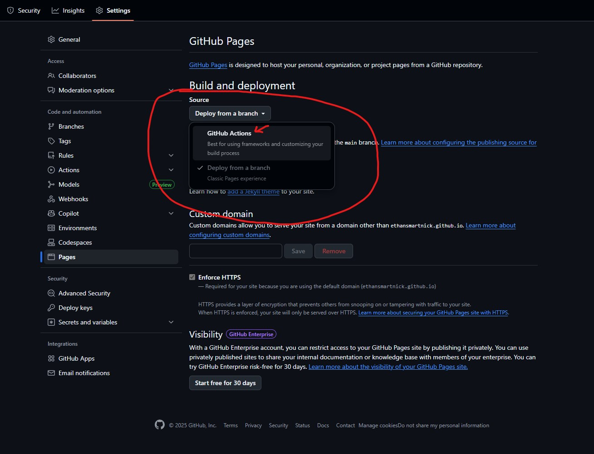
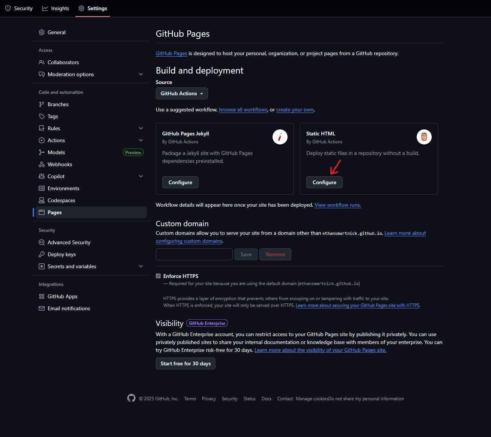
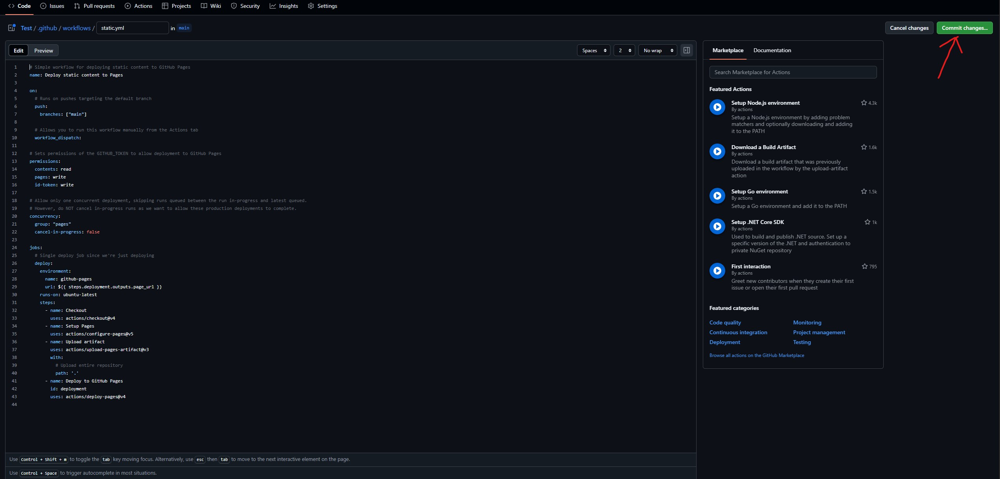
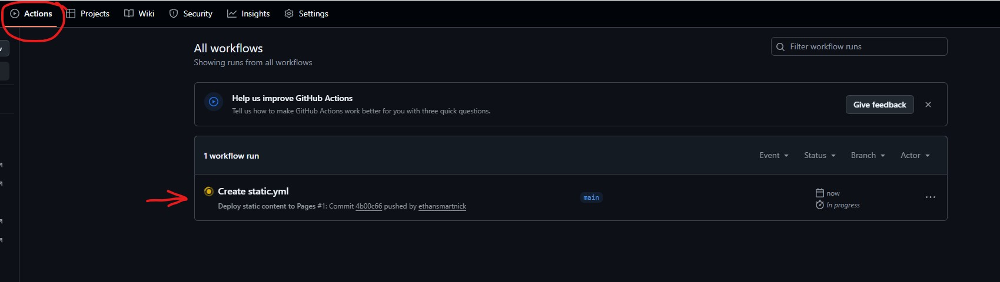
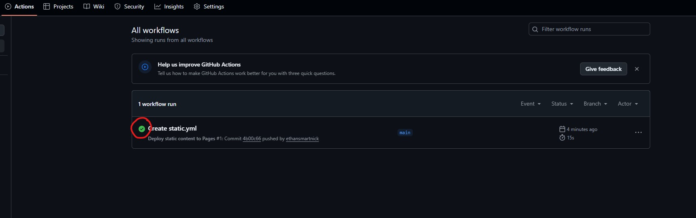
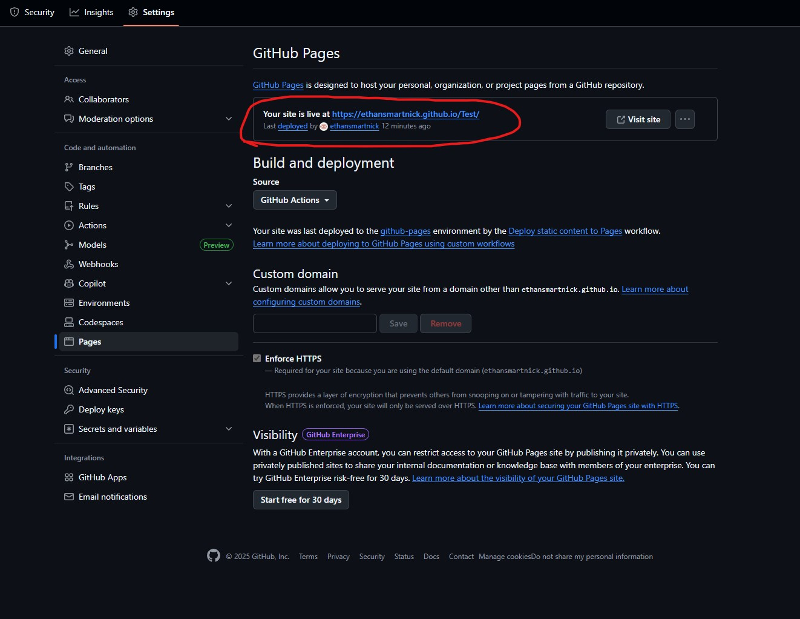
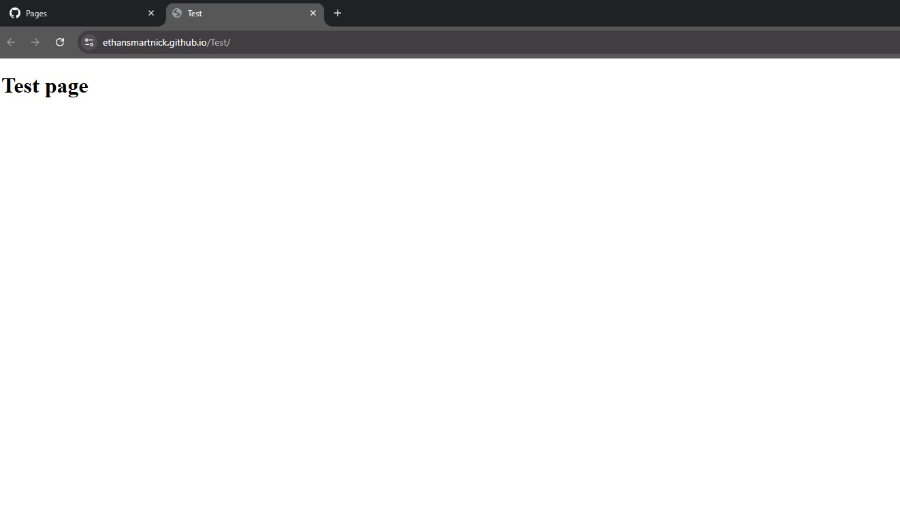
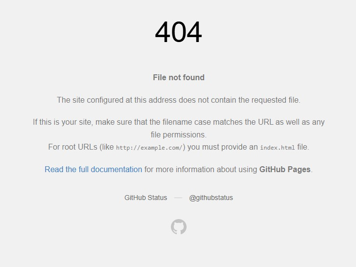

The Reasoning Behind My Decision
This website is hosted using GitHub Pages!
The main reason I chose GitHub Pages over other hosting options is its simplicity. It took me maybe five minutes, if not less, to research and set up. I can host the site directly from the repository, and most of the workflow is practically automated. Pushing updates is essentially a one-click process. Since this is a purely static site (which aligns perfectly with GitHub Pages’ primary design) and has no backend—nor any plans for one—GitHub Pages was an ideal fit.
How I Set It Up
First of all, the repository of your choosing must be public. Private repositories do not have the option to be hosted. Also, GitHub Pages requires an index.html file. If this does not exist, you will be presented with an error seen at the end of this article.
Once you have ensured your repo is public, go to the settings tab of your repository. Scroll down until you find the "Pages" section.
Next, under the Pages tab, click the source drop-down and select "GitHub Actions".
After that, you have two options: Jekyll or Static HTML. In this case, I'll be creating a static website, so I went with the static HTML workflow.
You will then be presented with this page, which provides the source code for the workflow. In my case, this will be published under the main branch, so nothing will need to be changed here. The only thing I'll need to do is commit the changes with the green button on the top right.
After you commit the changes, you can check the progress under the "Actions" tab. This takes about 10–30 seconds depending on folder size and server load. You will know the action is finished when there is a green checkbox next to it.
 And the website is now live! You can find the link in the same Pages tab under Settings we used before. The domain will be the same name as your repository. I covered custom domains here.
 Errors and Troubleshooting
As a side note: I found out the hard way while making a test site for this project that GitHub Pages actually requires an index.html file; otherwise, you will be presented with this error:
Also note: This file is case sensitive! For example, Index.html will not work, while index.html will. So make sure this file is named correctly. You can find more troubleshooting info at this link.